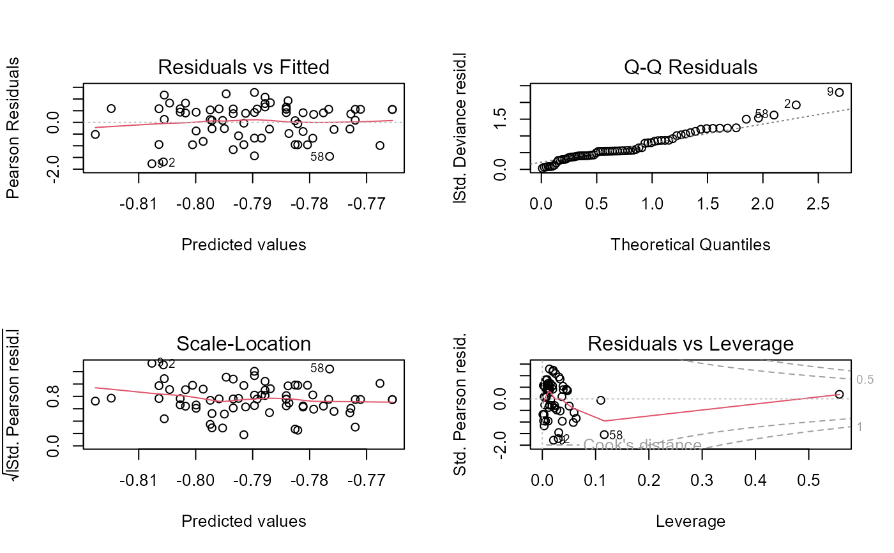
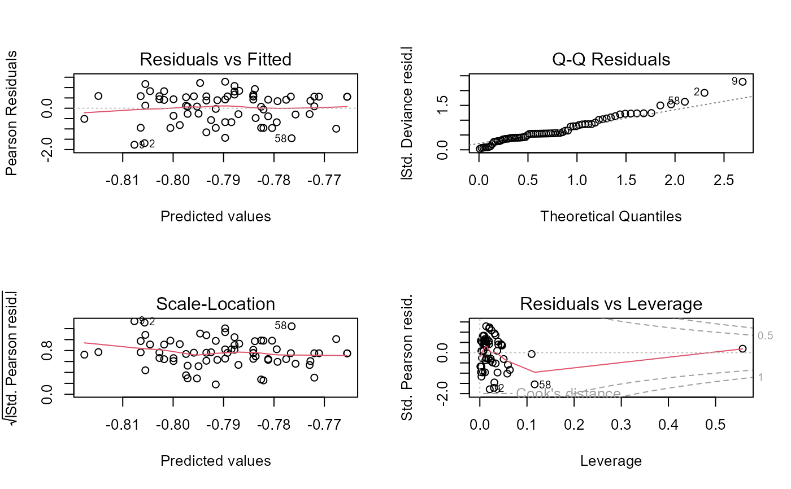

Elderton and Pearson's (1910) data on drinking and wages
DrinksWages.RdIn 1910, Karl Pearson weighed in on the debate, fostered by the temperance movement, on the evils done by alcohol not only to drinkers, but to their families. The report "A first study of the influence of parental alcoholism on the physique and ability of their offspring" was an ambitious attempt to the new methods of statistics to bear on an important question of social policy, to see if the hypothesis that children were damaged by parental alcoholism would stand up to statistical scrutiny.
Working with his assistant, Ethel M. Elderton, Pearson collected voluminous data in Edinburgh and Manchester on many aspects of health, stature, intelligence, etc. of children classified according to the drinking habits of their parents. His conclusions where almost invariably negative: the tendency of parents to drink appeared unrelated to any thing he had measured.
The firestorm that this report set off is well described by Stigler (1999),
Chapter 1. The data set DrinksWages is just one of Pearson's
many tables, that he published in a letter to The Times,
August 10, 1910.
Usage
data(DrinksWages)Format
A data frame with 70 observations on the following 6 variables, giving the number of non-drinkers (sober)
and drinkers (drinks) in various occupational categories (trade).
classwage class: a factor with levels
ABCtradea factor with levels
bakerbarmanbillposter...wellsinkerwireworkersoberthe number of non-drinkers, a numeric vector
drinksthe number of drinkers, a numeric vector
wageweekly wage (in shillings), a numeric vector
ntotal number, a numeric vector
Details
The data give Karl Pearson's tabulation of the father's trades from an Edinburgh sample, classified by whether they drink or are sober, and giving average weekly wage.
The wages are averages of the individuals' nominal wages. Class A is those with wages under 2.5s.; B: those with wages 2.5s. to 30s.; C: wages over 30s.
Source
Pearson, K. (1910). The Times, August 10, 1910.
Stigler, S. M. (1999). Statistics on the Table: The History of Statistical Concepts and Methods. Harvard University Press, Table 1.1
References
M. E. Elderton & K. Pearson (1910). A first study of the influence of parental alcoholism on the physique and ability of their offspring, Eugenics Laboratory Memoirs, 10.
Examples
data(DrinksWages)
plot(DrinksWages)
# plot proportion sober vs. wage | class
with(DrinksWages, plot(wage, sober/n, col=c("blue","red","green")[class]))
 # fit logistic regression model of sober on wage
mod.sober <- glm(cbind(sober, n) ~ wage, family=binomial, data=DrinksWages)
summary(mod.sober)
#>
#> Call:
#> glm(formula = cbind(sober, n) ~ wage, family = binomial, data = DrinksWages)
#>
#> Coefficients:
#> Estimate Std. Error z value Pr(>|z|)
#> (Intercept) -0.839963 0.323962 -2.593 0.00952 **
#> wage 0.001862 0.012811 0.145 0.88443
#> ---
#> Signif. codes: 0 '***' 0.001 '**' 0.01 '*' 0.05 '.' 0.1 ' ' 1
#>
#> (Dispersion parameter for binomial family taken to be 1)
#>
#> Null deviance: 44.717 on 69 degrees of freedom
#> Residual deviance: 44.696 on 68 degrees of freedom
#> AIC: 194.06
#>
#> Number of Fisher Scoring iterations: 4
#>
op <- par(mfrow=c(2,2))
plot(mod.sober)

par(op)
# TODO: plot fitted model
# fit logistic regression model of sober on wage
mod.sober <- glm(cbind(sober, n) ~ wage, family=binomial, data=DrinksWages)
summary(mod.sober)
#>
#> Call:
#> glm(formula = cbind(sober, n) ~ wage, family = binomial, data = DrinksWages)
#>
#> Coefficients:
#> Estimate Std. Error z value Pr(>|z|)
#> (Intercept) -0.839963 0.323962 -2.593 0.00952 **
#> wage 0.001862 0.012811 0.145 0.88443
#> ---
#> Signif. codes: 0 '***' 0.001 '**' 0.01 '*' 0.05 '.' 0.1 ' ' 1
#>
#> (Dispersion parameter for binomial family taken to be 1)
#>
#> Null deviance: 44.717 on 69 degrees of freedom
#> Residual deviance: 44.696 on 68 degrees of freedom
#> AIC: 194.06
#>
#> Number of Fisher Scoring iterations: 4
#>
op <- par(mfrow=c(2,2))
plot(mod.sober)

par(op)
# TODO: plot fitted model